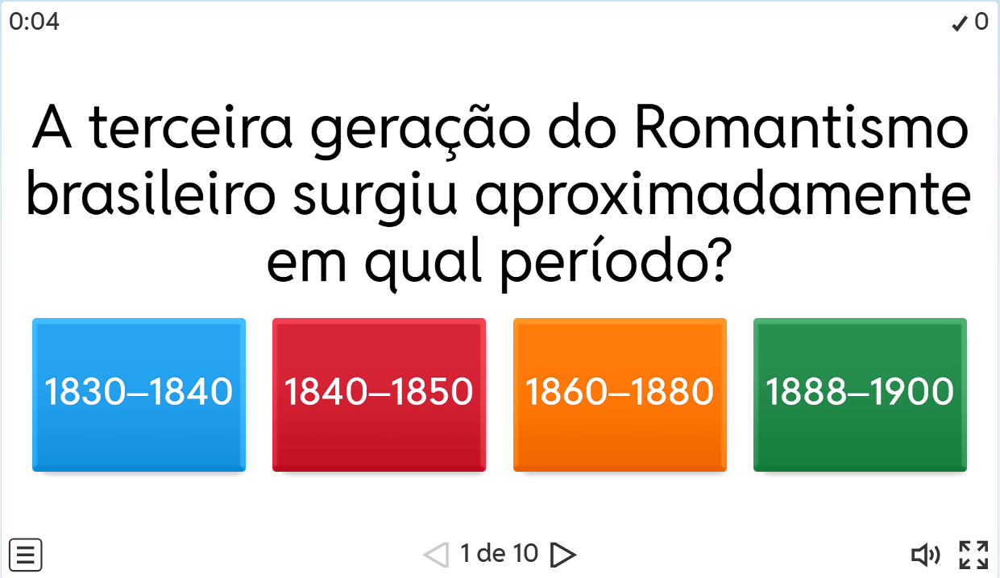
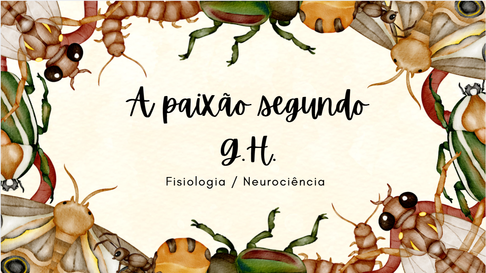
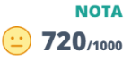
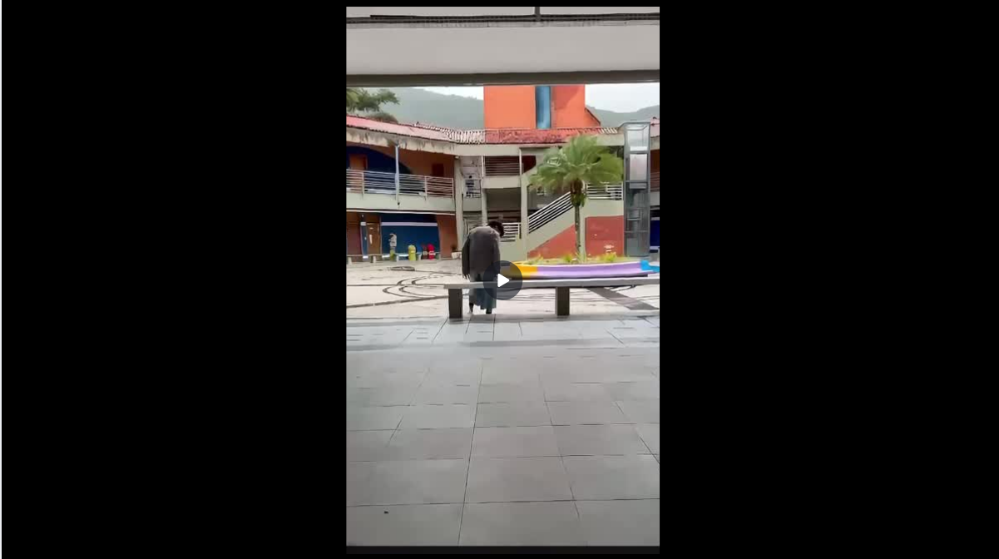
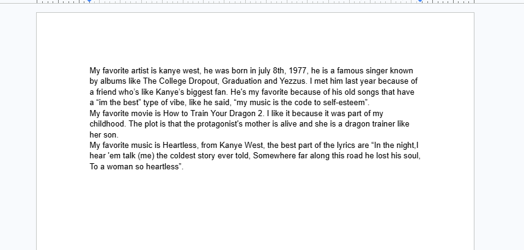

Apresentação sobre a fisiologia por trás do livro "A Paixão Segundo G.H.". Foi um trabalho muito esclarecedor que
me fez entender mais sobre o pensamento por trás do livro
Habilidades: H4 e H22


Um manifesto em formato de vídeo, foi uma boa atividade que ajudou a compreender os aspectos
vistos em sala de aula.
Habilidades: H3 e H24

Texto sobre artista, música e filme favoritos escrito em inglês, foi uma atividade
esclarecedora que ajudou a compreender mais sobre o assunto
Habilidades: H25